Тур в Антарктиду
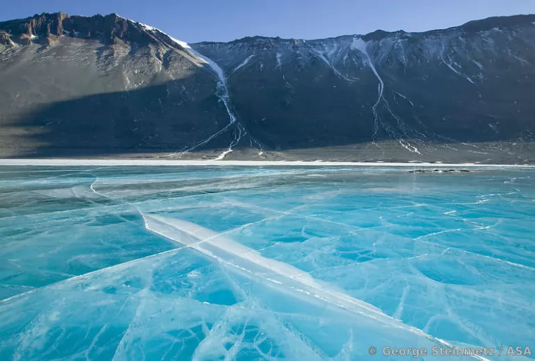В Антарктиде вы испытаете все от посадок в зрелищных окрестностях до тематических дней на борту. Вы можете также наслаждаться днями, которые проведете в полях, каякингом, а также исследовать воды Антарктики в маленьких лодках. Вернувшись, мы проходим мыс Горн, который мореплаватели - до Панамского канала - вынуждены были пройти, чтобы переправиться с одной стороны Американского континента на другую. Здесь мы даже попытаемся совершить посадку, несмотря на репутацию открытого моря и сложные погодние условия. Через чилийские фьорды мы достигнем Пунта-Аренас, чтобы попрощаться и сесть на рейс домой.
День 1
Мы начинаем путешествие с ночевкой в Монтевидео. Посещение Ciudad Vieja (Старый город) и его зданий18-го века, динамичного Меркадо-дель-Пуэрто, оживленной Авениды 18 де Хулио с её многочисленными театрами, музеями и художественными галереями, а также участок белых песчаных пляжей, окружающих город.
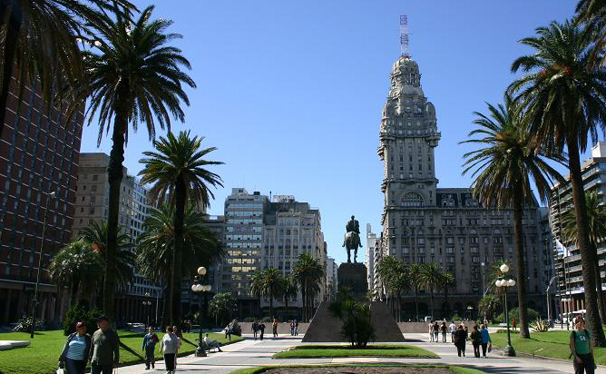 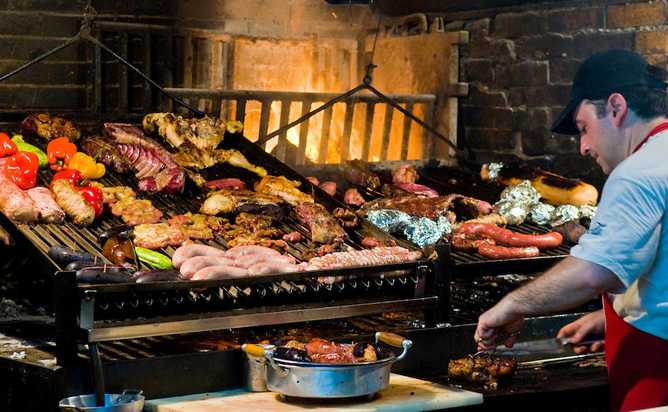День 2
На следующее утро вы садитесь на круизный лайнер MS Midnatsol, и ваше приключение начинается!
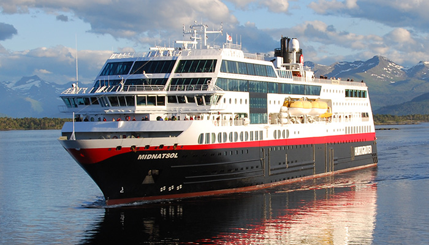День 3
Проведя день на море, вы можете узнать ваших коллег-авантюристов, весело провести время в комнате проводника или просто насладиться видом с палубы.
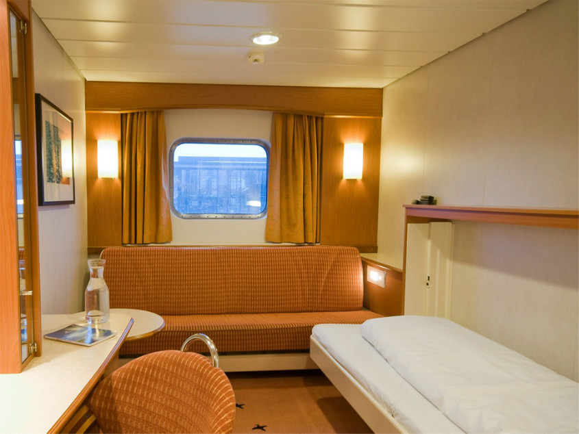День 4
Вы можете рассчитывать на то, что мы посетим регион Вальдес и пробудем там 1,5 дня. Это одно из самых ярких мест дикой природы в Аргентине, где вы сможете понаблюдать за некоторыми большими морскими животными в их естественной среде. Мы также наведаемся к удивительному Пуэрто-Мадрин.
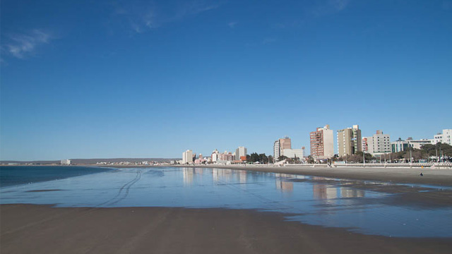 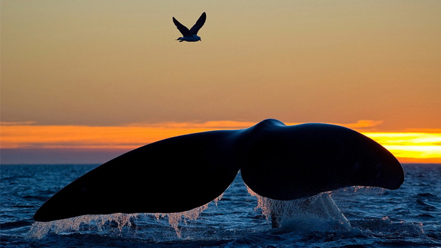День 5
Мы посетим великолепный Вальдес! Расположенный на восточном Патагонском побережье Аргентины, этот необычной формы полуостров является домом для некоторых из животных дикой природы страны, например, морских слонов, Магеллановых пингвинов, южного кита и множества птиц. Полуостров Вальдес был объявлен объектом Всемирного наследия ЮНЕСКО.
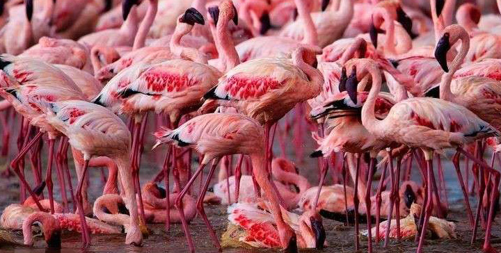 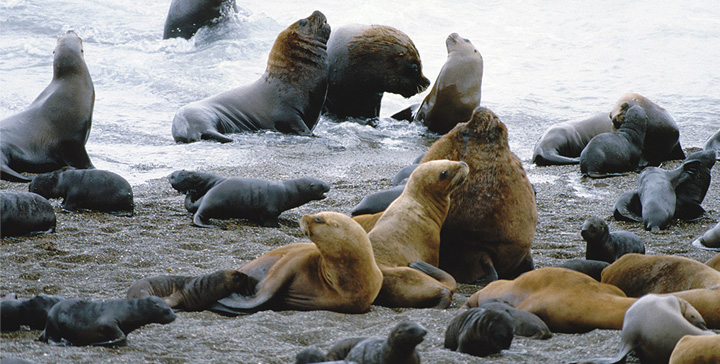День 6
Мы проведем еще один расслабляющий, но захватывающий день у моря.
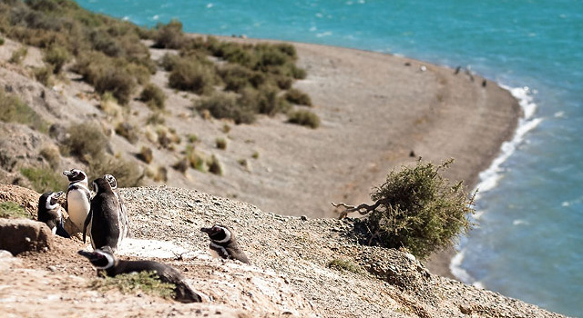День 7
Фолклендские острова состоят из двух больших островов и около 700 мелких. Как только мы достигнем самых западных форпостов, вы увидите отдаленные фермы, которые принадлежат семьи в течение шести или семи поколений. Овцы пасутся рядом с огромными колониями альбатросов и пингвинами-скалолазами, в то время как хищные полосатые каракары надзирают, а Магеллановы гуси кормятся у самой кромки воды. Мы посетим местную семью, а также насладимся пирожными и прохладительными напитками.
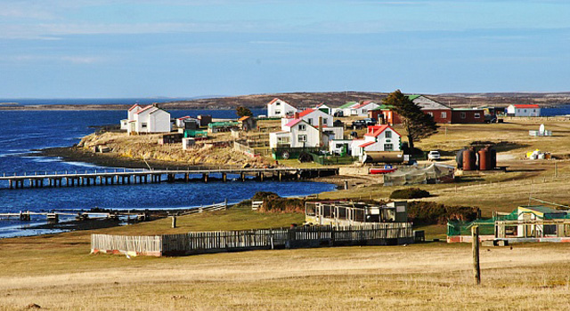 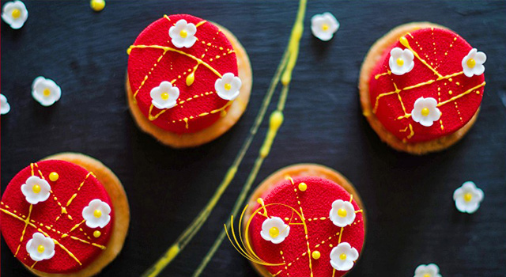День 8
Фолклендские острова изобилуют красотами дикой природы. Это незагрязненная среда с фантастически чистым голубым небом, беспрепятственным горизонтом, обширным открытым пространством и великолепными пляжами с белым песком. Пингвины подойдут к вам близко, остановятся и посмотрят на вас, прежде чем продолжить свой путь, что дает вам большие возможности сделать фото!

День 9
Стэнли, столица островов, замечательная отправная точка для различных экскурсий, которые мы предлагаем. Для того, чтобы узнать город, достаточно одного дня, поскольку магазины и различные виды услуг сосредоточены в порту, в том числе оживленные пабы Стэнли.
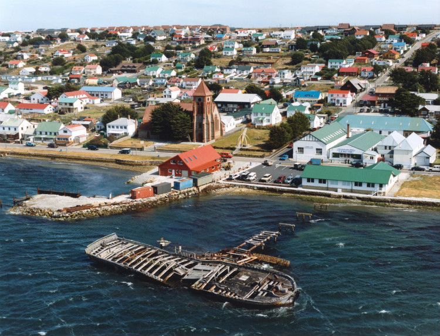День 10
Завтра мы будем уже в Антарктиде! Вы скоро узнаете, соответствует ли ваш внутренний образ Антарктиды действительности. Мы заполним день подготовкой и вы получите лакомые кусочки информации, которые дадут вам наилучший холст, на котором вы будете рисовать ваш опыт. Наш Полярный кинофестиваль будет продолжаться в лекционном зале.
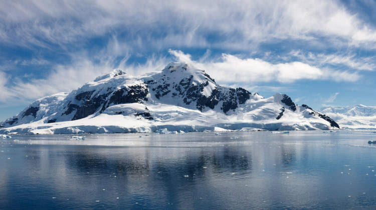 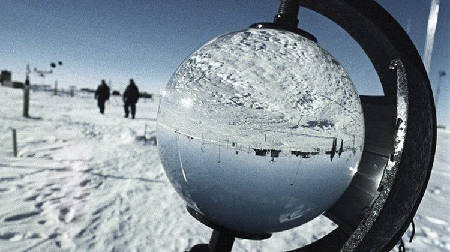День 11
Теперь вы находитесь в одном из самых отдаленных районов мира! Мы будем посещать места, которые использовались в старые времена китобоями, а также у нас будут проходить тематические дни на борту. Среди мест, которые мы увидим, остров Кувервиль, на котором проживает одна из крупнейших известных колоний пингвинов папуа. Гавань Неко прекрасно расположена во внутренней части залива Эндворд. Гавань Paradise получила свое название от китобоев в течение прошлого столетия. У бухты Вильгельмины захватывающий пейзаж и часто её называют "бухта-кит", из-за большого количества китов здесь в декабре. Антарктический пролив предлагает поразительный ассортимент плавучих льдов. Браун Блаф вы узнаете по скалам, которые доминируют над пейзажем на высоте 750 метров. После знакомства с этим превосходным континентом, мы устанавливаем курс на Южную Америку снова. Во время экспедиции вы увидете пингвинов, тюленей и китов (возможно, они подойдут близко к берегу), а также насладитесь каякингом и изучением льда на маленьких лодках.
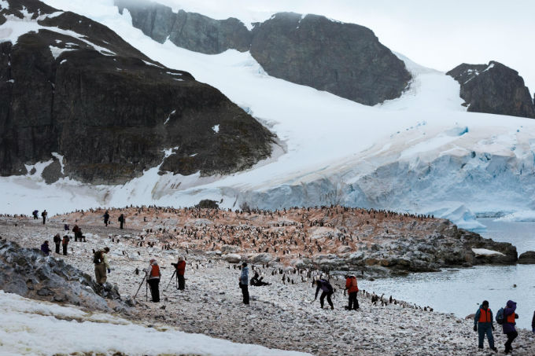 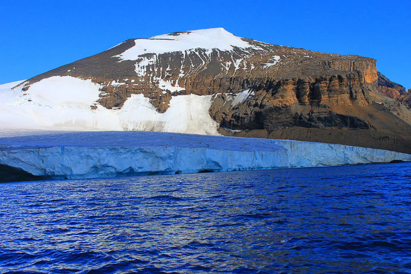День 12
Мы продолжаем путешествие по Антарктиде.
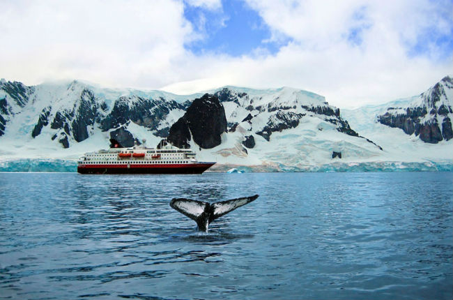 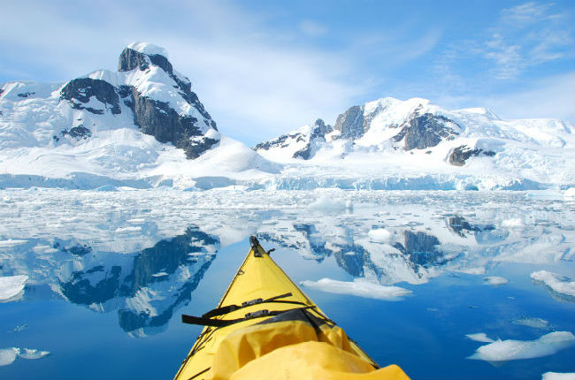День 13
Наше путешествие по Антарктиде продолжается!
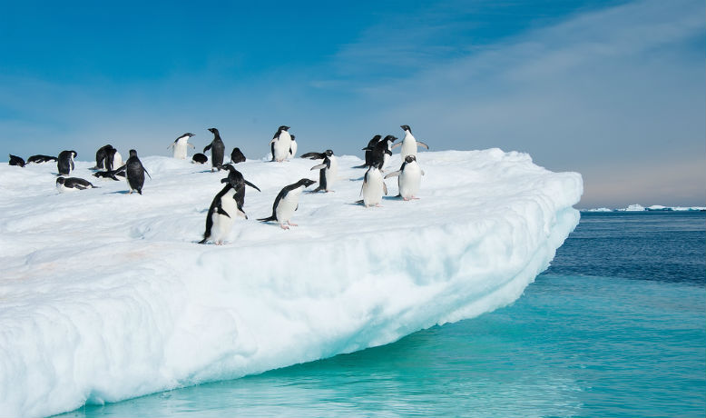 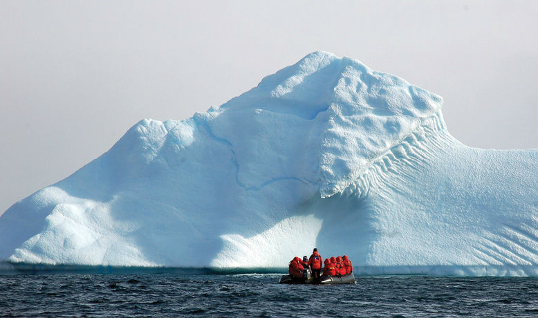День 14
Во время тура вы увидете много интересного!
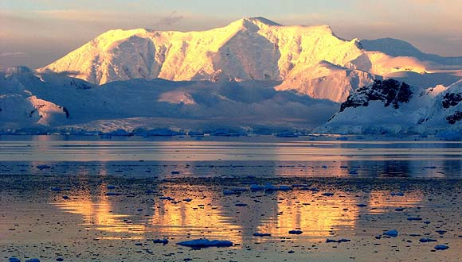 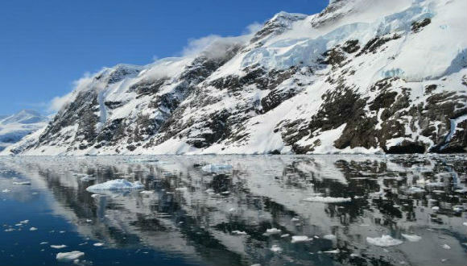День 15
Пролив Дрейка был известен среди ранних исследников и является уникальным переходом в море. Вы можете использовать этот день в море, чтобы законспектировать свой опыт, отсортировать фотографии или просто отдохнуть на палубе.
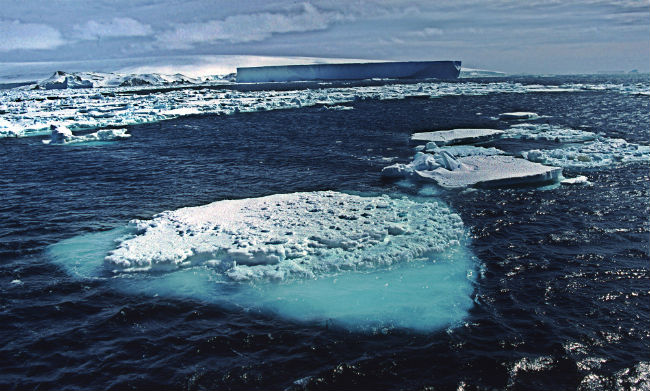 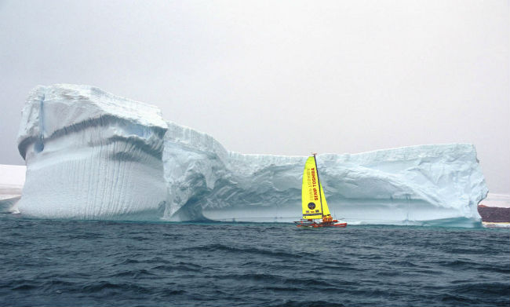День 16
Мыс Горн занимает видное место в списке мифических мест. Перед тем как переплыть Панамский канал, морякам пришлось пройти этот печально известный скалистый остров, чтобы добраться с одной стороны Американского континента на другую. Мы сделаем все от нас зависящее, чтобы совершить посадку на мысе Горн. Однако, эта область известная сложными условиями, и если мы сделаем это, это будет большим достижением!
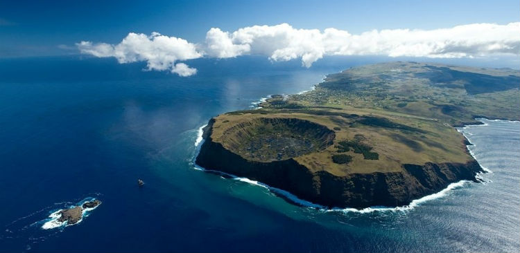День 17
Поскольку мы устанавливаем курс на Пунта-Аренас, мы плывем через одни из самых диких и самых впечатляющих пейзажей на земле. Чилийские фьорды глубокие с высокими горами и ледниками, которые откололись и плавают в море. Наслаждайтесь удивительным видом с палубы, или выходите на берег, чтобы исследовать эту область, как Дарвин сделал больше, чем 180 лет назад.
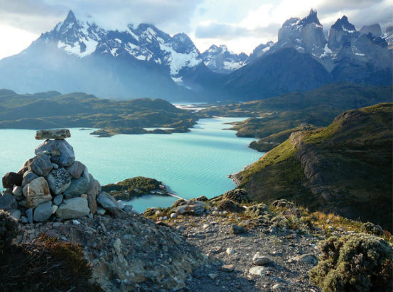 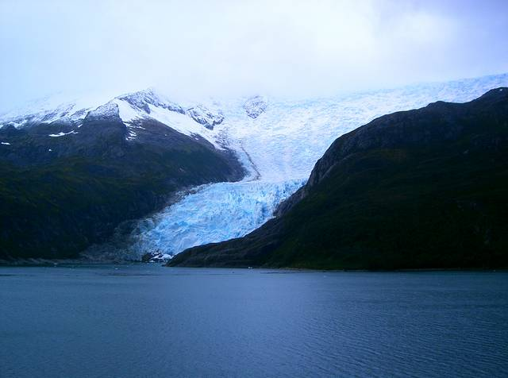День 18
К сожалению, каждое приключение должно прийти к концу. Мы достигаем Пунта-Аренас, что находится на краю Магелланового пролива, и настает время попрощаться со всеми своими новыми друзьями и экипажем. Ваше путешествие домой продолжается полетом до Сантьяго-де-Чили.
 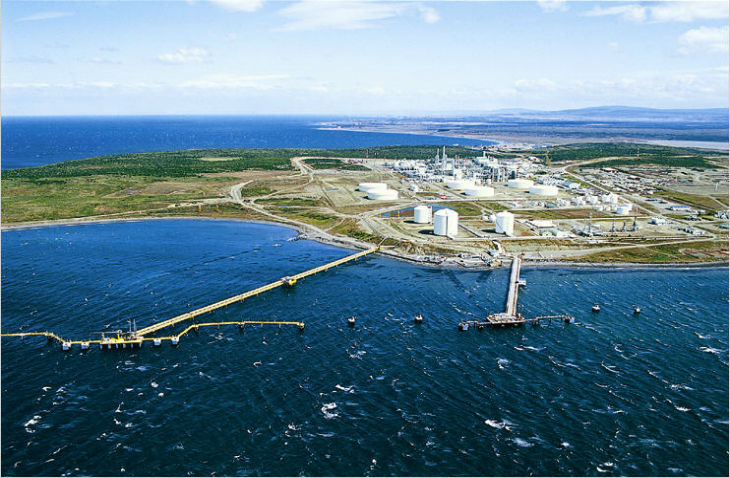
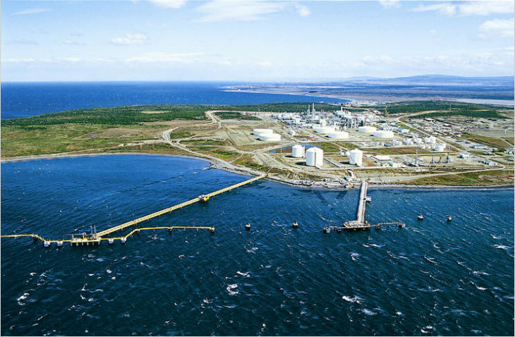